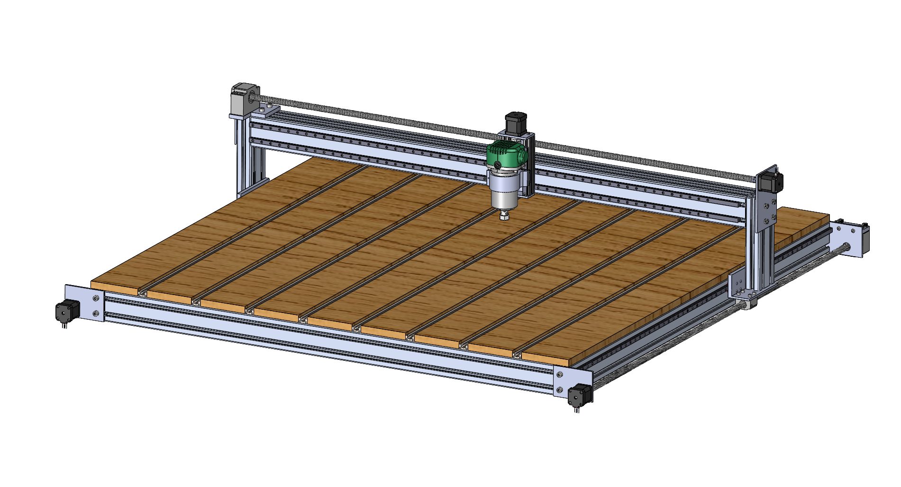

Project Overview

This CNC Router project bridges the gap between compact, limited-capacity CNC systems and prohibitively expensive industrial solutions. Designed specifically for hobbyists, makers, and small-scale workshops, the CNC router focuses on affordability, ease of sourcing parts, and performance. The system supports working with hardwoods and plastic sheets, providing a 4’ x 4’ working area while maintaining a high degree of precision. By tailoring the design to hobbyist needs, this project delivers a cost-effective and scalable solution.
Key Features
- Large Working Area: Provides a 4’ x 4’ cutting surface with a 3” working height, fitting into a compact 5’ x 6’ footprint.
- Affordable Components: Total component cost under $4000 CAD, with parts sourced from consumer-grade suppliers.
- Precision and Performance: Achieves 3-axis motion precision in line with ISO 230-2 standards, with a frame rigidity safety factor of 3.
- Hobbyist-Friendly Assembly: Designed for easy assembly by a single user, with standardized connections and clear instructions.
- Material Compatibility: Supports cutting hardwoods and plastic sheets, with optimized designs for rigidity and durability.
Gallery